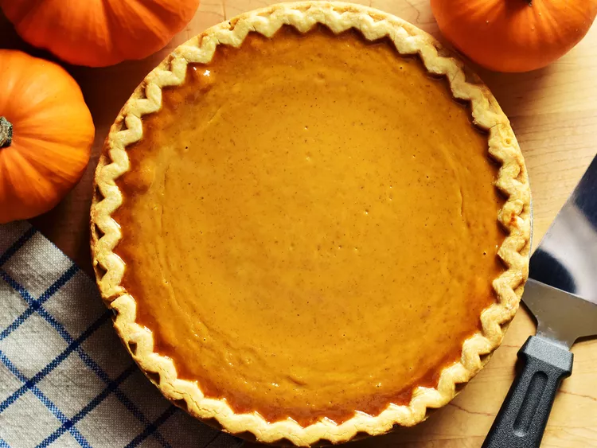

Pumpkin Pie

Description
Pumpkin pie is a delicious dessert for Thanksgiving or anytime.
Pair it with whipped cream, vanilla ice cream,
or simply serve it on its own.
This recipe comes from Vincent Price's "Come Into The Kitchen"
book of recipes. It's unusual in that it contains no cinnamon!
Instead it uses ground mace, ginger, and nutmeg.
I make this pie every year and my family loves it!
Ingredients
- 1 9-inch unbaked pie shell (try
this one.)
- 1 1/2 cups canned pumpkin
- 3 eggs, well beaten
- 1 1/2 cups heavy cream
- 3/4 cups granulated sugar
- 1/2 teaspoon salt
- 1 teaspoon ground mace
- 1/2 teaspoon ground ginger
- 1/2 teaspoon ground nutmeg
Steps
- Make the pie shell with a high scalloped edge.
- Preheat oven to 425 degrees F.
- In a large bowl, combine the pumpkin with the eggs,
then the cream, sugar, salt, and spices. Blend well
and pout into the chilled pie shell.
- Bake for 15 mins, then reduce heat to 350 degrees and
bake for 50-65 mins more, or until knife inserted in
center comes out with few flecks.